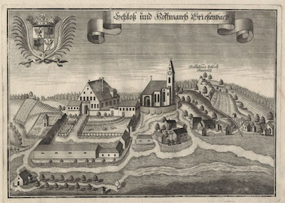

Geschichte
 Schloss Wörth/Isar wurde 1769 unter der Führung der Regie der Kurfürstlichen Kammer neue erbaut. Es ist heute ein 250 Jahre Denkmalgeschütztes Geschäfts-und Wohnhaus in zentralster Lage. Für die Wörtherer war das Schloss immer schon von Bedeutung. Das kommt auch im Gemeindewappen zum Ausdruck, dass im Jahr 1961 der “Isargemeinde” verliehen wurde. Seit dem späten Mittelalter bis zum Beginn des 19. Jahrhunderts hatten die beiden Frauenklöster Niederviehbach und Niedermünster in Regensburg, als Inhaber die Grundherrschaft über die meisten Anwesen in Woerth an der Isar. Im Staatsarchive Landshut liegen Urkunden vor, in denen mehrer Wirte genannt werden. Im Jahr 1689 wird neben der Taverne auch die Bräustatt genannt.
Aus dieser und zwei weiteren Urkunden wird deutlich dass, das
Brau und Schenkungsrecht zum churfürstlichen Kasten in Landshut gehörte. Noch heute besteht eine Braulizenz. Der gesamte Komplex der Brau Gebäude wurde im Jahre 1769 bis 1771 unter
der Regie der churfürstlichen Hofkammer in München neu erbaut.Seit 1992 war das Schloss im Besitz der Familie Kell. Die Schlossbrauerei war unter der
Leitung von Georg Kell bis 1973 im Betrieb. 2017 wurde dann das Schloss an uns verkauft und die Schloss Wörth GmbH gegründet.